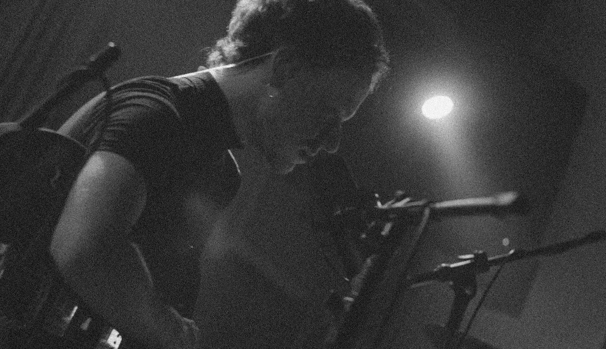

BIO
Born in São Paulo, Brazil, Lucas Mellone has always engaged deeply
in creative tasks ever since he was a child. He began drawing when
he was only 6 years old, and continued to hone these abilities
until he got into the architecture school and started working as
an architect.
“Architecture [ school ] gave me a sense that we can do lots of
things at once. One day I can explore drawing with my own hands,
another day I can explore visualising and understanding complex
human-to-space relationships. After trying out so many things, I
naturally realised I wanted to pursue music as well, I wanted to
expose feelings in a way people can experience in a visceral way.”
In between all those years, Lucas really shared a deep love for
music by both active listening and playing. He wrote, produced,
mixed and also painted the cover art in his newest single
“Aujourd'hui”, a fresh collaboration with the pianist Timothy
Growth:
“I wrote this song while still in lockdown. I feel the pandemic is
something I will still be talking about for a long time, mostly
because I lost my father to Covid, lost contact with friends and
family, and the lyrics try to summarise this whole field of
emotions in a way”.
This time, Mellone’s melancholic vocals talk about a past that
will never come back, and many possibilities that were open and
hoped for the future:
‘Living behind those memories
I'm used to search for the ways we
Could've make it through
A presеntless present I fathom
Without thе futures we've hoped for
A million times’
“I usually worry a lot about the future and regret about the past.
I thought we would all overcome the malice caused by the pandemic
with a brighter future, and this future is today. When I wrote the
song I was studying French and the word ‘Aujourd’hui’ stuck with
me. It just means ‘today’ in english but it has such semantics
that makes it a good word to summarise something I always forget
about.”
Fusing cinematic with folktronica, ambience and acoustic elements,
Lucas paints a broad picture of grief, hope and in-betweens over
his sounds.
Now having moved to Italy, Lucas is currently working on a new
collaboration with the Italian musician Emanuele Tabarrini in form
of the full-length album “Shapeshifter”.
Photo by Gustavo Lorenzini. All Rights Reserved. 2024.
